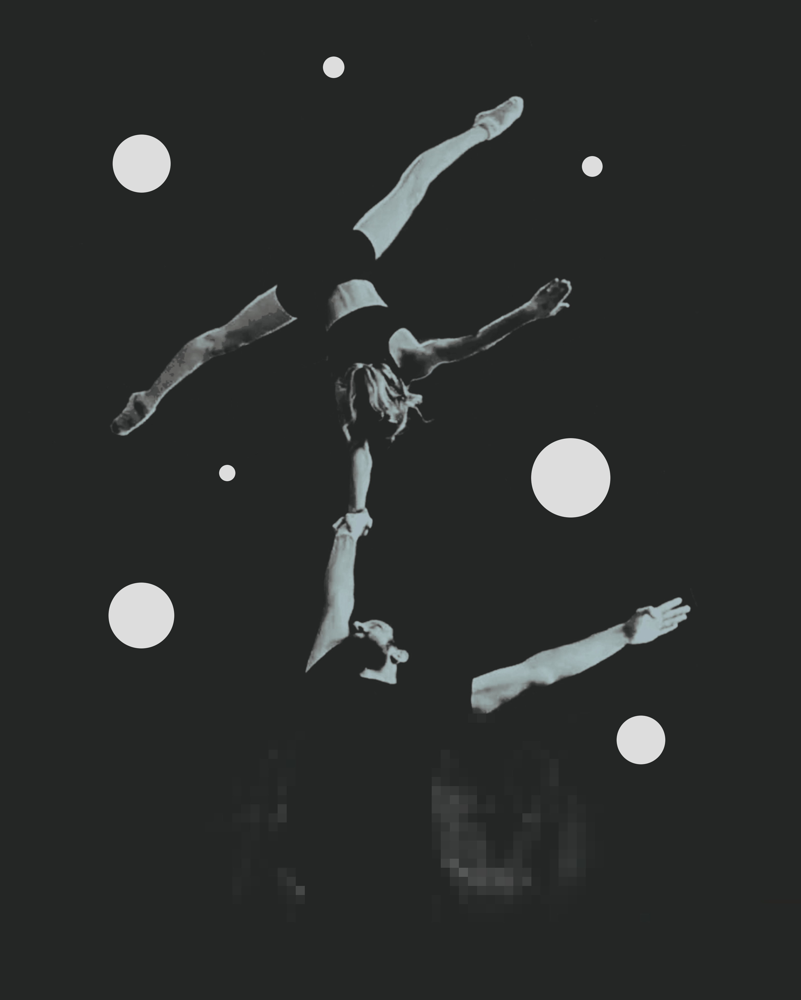
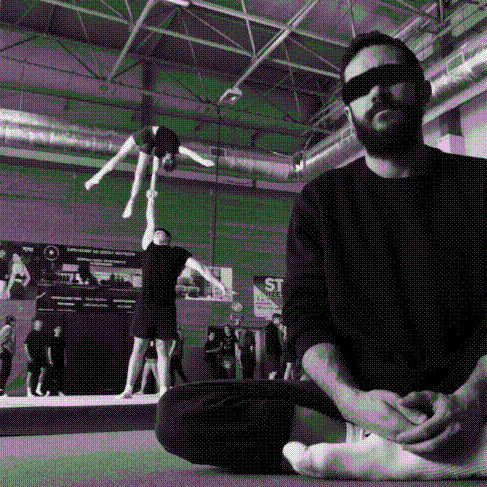
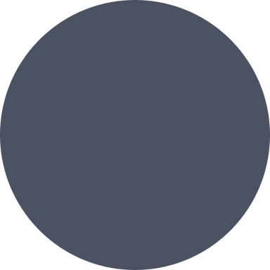

Ein Generationen übergreifendes Ensemble von Akrobaten in und um Saarlouis. Die Technik der Sportakrobatik vereint mit der kreativen Freiheit des zeitgenössischen Zirkus.

Our first show will accompany three girls, acrobatic flowers in growth, living on an island of safety. They try to cross the ocean of childhood, but are threatened to be carried away by the nymphs. Together they try to survive the waves of uncertainty. This is their story, told through acrobatic movement.
Minimal stage-, costume- and light design, with music by Clann.
Our ensemble consists of acrobats and coaches from X clubs around Saarlouis.



Die Fleurs sind Sportakrobaten bei Acro Saarlouis (TV 1879 Roden), unserem lokalen Verein.
In Osteuropa wird die Sportakrobatik aufgrund ihrer umfassenden Bewegungsschulung auch als "Fundament" des Sports beschrieben. Wenn du auch mit uns auf die Bühne möchtest, führt der Weg über den Sport. Nicht zuletzt deshalb gibt es unser Ensemble, um eben jener Bewegungskunst, die in der Sportakrobatik ihren höchsten Ausdruck findet, hier in unserer Region zu der ihr gebührenden Aufmerksamkeit zu verhelfen.
In einem der lokalen Akrobatikvereine in deiner Nähe kannst du erste Erfahrungen mit dieser Form der Akrobatik machen.
local
non-profit
social
acrobatic
performance
art.